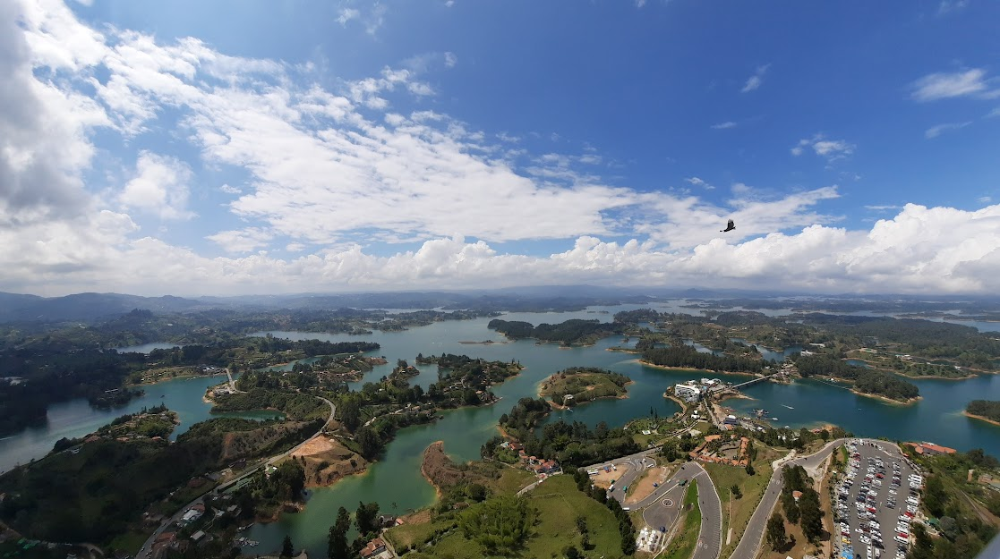

Go Back
A day trip to Guatapé

Guatapé is a town and also the name of the adjacent lagoon which is about 2 hours east of Medellín. It makes for a great day trip or would even be a nice place to spend a night or two. It's easy to get here by bus from Medellín's North bus terminal. Just arrive at the station, find the booth selling tickets to Guatapé to buy your tickets and get on the bus! Once you arrive, you can walk, tuk-tuk or take a horse to La Piedra where you will climb up 708 steps to get an incredible view of the lagoon. It doesn't take too long to climb up, maybe around 20 minutes. At the top there are some vendors and there was a little house you can go inside and explore.
At the bottom there are some restaurants where you can enjoy a bandeja paisa or other dish of your choice. Then you can take a tuk-tuk to the nearby town of Guatapé. It's a charming little town with a colourful touristy area with lots of cafes, souvenir shops and cool paintings and art. I recall being invited to drink a beer with an old man who lived in the town. He told me the story about how he ended up moving out there from Palmira and then went on to recount Colombia's history and the progress the country has made. It was a very memorable conversation in a unique place. After this we got back on the bus to Medellin. It was an awesome day trip that I would recommend to anyone visiting the area!
Other activities you can do here include water sports such as boating and jet skiing in the lagoon.